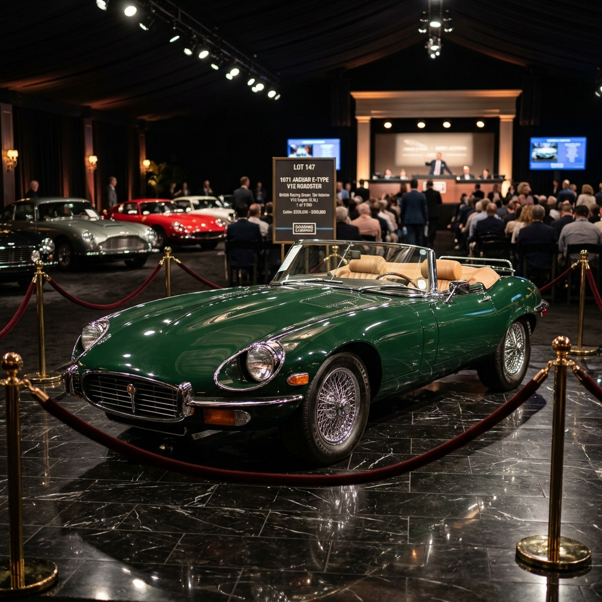
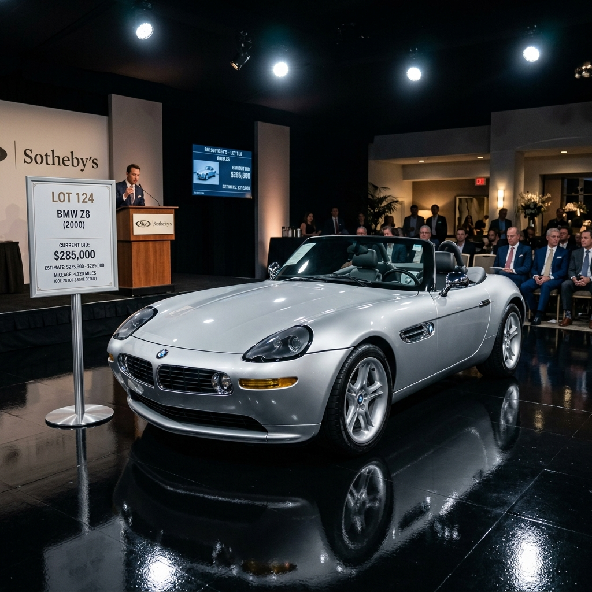
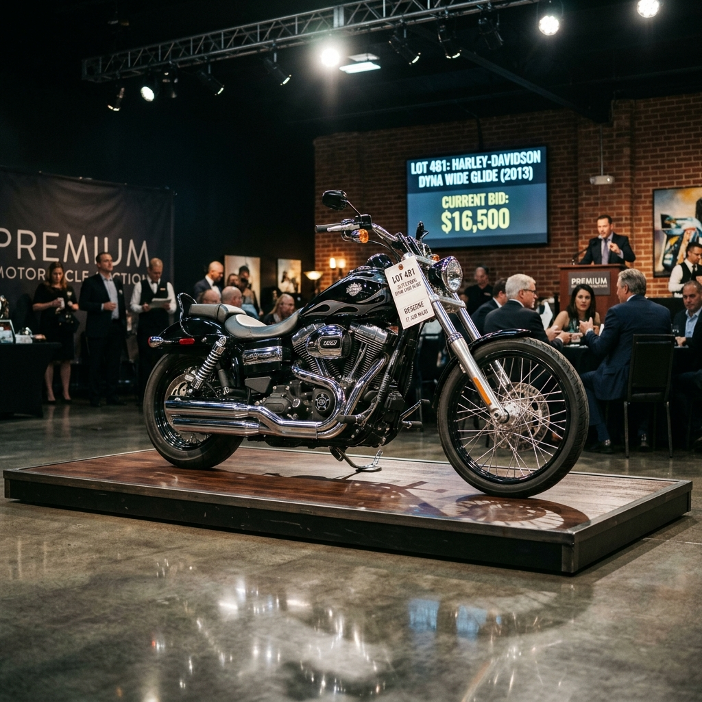
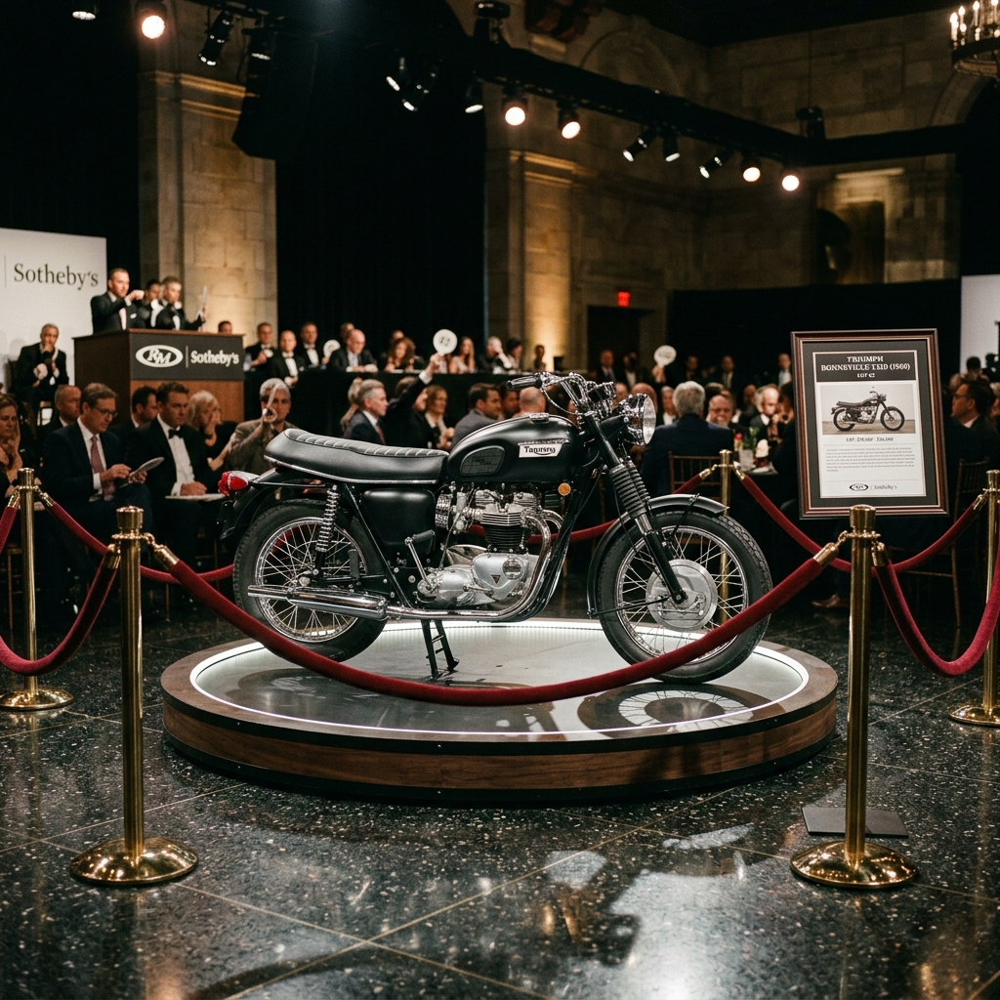

Gerard Butler is parting ways with some of his most prized personal vehicles. Each piece is personally owned and carries the story of the man behind the legend. Bid now — these won't last.

Gerard's crown jewel. This British Racing Green Jaguar E-Type — once described by Enzo Ferrari as "the most beautiful car ever made" — was a prized personal possession. Fully restored, with original V12 engine and cream leather interior.
Place a Bid →
This is the car Gerard used as his personal everyday ride around Los Angeles. The BMW Z8 is one of the most iconic roadsters ever produced — only 5,703 were ever made worldwide. Low mileage, impeccably maintained, and garage-kept.
Place a Bid →
Photographed multiple times cruising the Pacific Coast Highway, this Harley-Davidson is Gerard's signature ride. Custom matte black finish with chrome detailing. A true Californian icon, ridden by the man himself across thousands of miles.
Place a Bid →
Most recently spotted in July 2025, Gerard was riding this Triumph Bonneville through the hills of Malibu with his partner Morgan Brown. A timeless British icon with a personal story. This is your chance to own a piece of his everyday life.
Place a Bid →Fanclub Members Only. Bidding access is exclusively reserved for verified Gerard Butler Fanclub members. All bids are final and subject to verification. Winning bidders will be contacted directly by the management team to arrange secure collection or delivery.